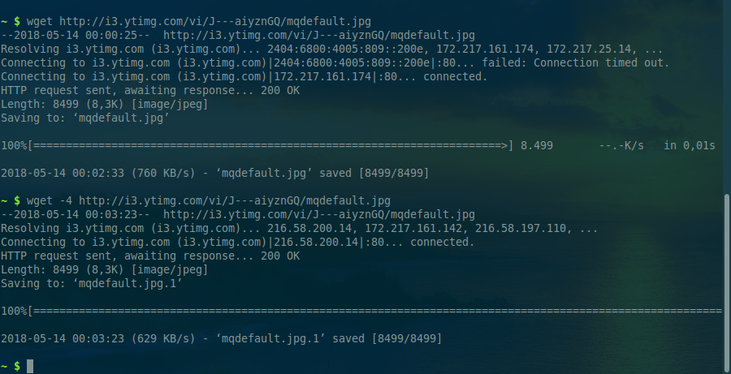

Download file trong Python
Chúng ta có thể download file trong Python bằng các cách sau:
- Sử dụng hàm
urlretrievecủaurllib(Python 2) hoặcurllib.request(Python 3) - Sử dụng hàm
urllib2.urlopen(url).read()để đọc dữ liệu binary, sau đó ghi ra file - Tạo request bằng hàm
requests.get(url), sau đó ghicontentra file
Source
Chú ý, chúng ta có thể gặp trường hợp download rất là chậm. Đó không phải là lỗi của Python (không phải là nguyên nhân gốc). Đó là do máy tính của chúng ta nhận cả IPV6 nên sẽ xử lý IPV6. Lúc xử lý IPV6 thì không được, bị lỗi timed out.
Chúng ta có thể kiểm tra bằng lệnh wget. Đây là ảnh khi có IPV6:

Chúng ta hãy thử disable IPV6:
$ sudo sh -c 'echo 1 > /proc/sys/net/ipv6/conf/all/disable_ipv6'
Thử lại lệnh wget thì thấy download nhanh:

Tham khảo